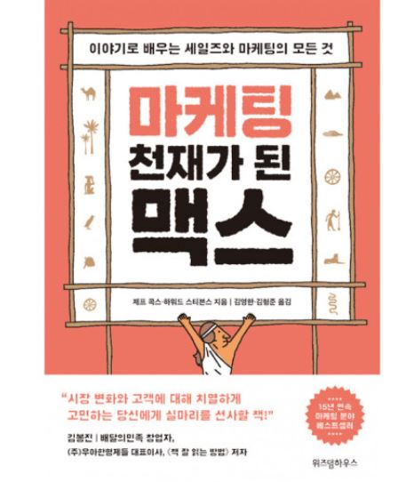
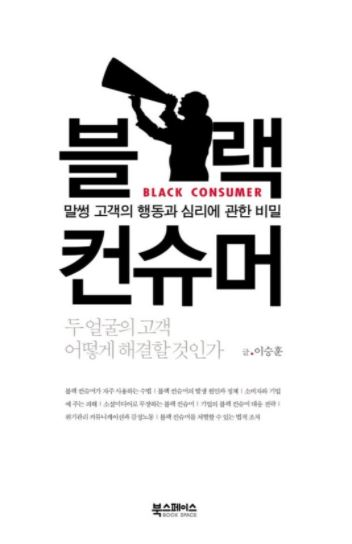

About Management
마케팅 천재가 된 맥스

지은이: 제프 콕스, 하워드 스티븐스 | 페이지 352
이 책은 피라미드의 건설을 위해 많은 사람이 노동을 하는 상황에서, 맥스가 바퀴를 개발하며 성공하는 이야기를 담았다. 바퀴의 개발부터 판매까지 시간의 흐름에 따라 적절한 마케팅 전략을 사용하면서 최고의 기업가로 성장하는 내용이다.
책에서 가장 흥미로운 마케팅 방법이 있었다. 바퀴를 발명한 맥스가 물건이 잘 팔리지 않아 카시우스에게 판매를 부탁했다. 카시우스는 마을의 공연장을 대여해 사람들 앞에서 광고했다. 1톤의 무거운 바위를 한 남자가 한 손으로 끄는 공연이 있을 것이고, 남자가 바위를 끌지 못하면 관객들에게 돈을 주겠다고 홍보했다. 호기심을 느낀 사람들은 입장료를 지급하고 공연을 보러왔다. 이에 카시우스는 관객들 앞에서 바퀴를 사용하며 바퀴를 끌었다. 그 당시 바퀴를 알지 못했던 사람들에게 바퀴를 인식시켜주고, 판매를 촉진할 수 있었다. 그 당시에는 바퀴가 세상에 없었기 때문에 사람들은 바퀴를 신뢰하지 않았을 것이다. 그래서 바퀴에 대한 위험보다는 기존에 썰매를 고수하는 것이 좋다고 생각했다. 카시우스는 이러한 생각을 알고 사람들의 호기심을 자극하는 마케팅을 했다. 이러한 마케팅 방식이 고객들의 심리를 잘 파악하고 적절했다고 느꼈다.
이를 통해서 나도 카시우스처럼 상황에 맞는 적절한 마케팅을 고안해보고 싶다고 느꼈다. 책을 읽으면서 마케팅에 대한 지식을 얻었고, 관심도 증가하였다. 또한, 마케팅에 흥미를 느껴 기회가 된다면 도전해보고 싶었다. 마케팅을 단순히 수익적인 부분에서 바라보는 것이 아니라 그 과정에서 얻는 이점과 소비자의 만족도를 따져가며 실행해야겠다.
블랙 컨슈머

지은이: 이승훈 | 페이지 360
이 책은 블랙컨슈머에 대해 상세하게 다룬 책이다. 블랙컨슈머는 "상품이나 서비스의 불량을 고의로 유발한 후 이를 문제 삼아 기업을 상대로 과도한 피해 보상을 요구하거나 억지를 써서 보상을 받으려 하는 악덕 소비자"를 지칭한다. 주로 소비자의 주권 강화와 인터넷의 발달로 인해 등장하게 된 블랙 컨슈머의 특징과 대응 방안에 대한 내용이 담겨있다.
블랙컨슈머와 함께 "체리피커"라는 용어도 소개가 되었다. 기업의 상품을 구매하지 않거나 서비스를 이용하지 않으면서 자신의 실속만 차리는 소비자를 "체리피커"라고 부른다. 예를 들어 신용카드사에서 제공하는 서비스 혜택만 누리고 실제 카드 사용은 거의 하지 않는 고객이 있다. 체리피커에 대해, 블랙컨슈머로 일종으로 보는 입장이 있었다. 나 역시 그렇게 생각했다. 하지만, 책에서는 체리피커의 등장 원인은 기업의 마케팅 실패로 인한 것이라고 설명했다. 마케팅과 경영 부분에 기업이 실수가 있었고, 이를 제대로 인지하는 것이 중요하다고 생각했다.
나는 블랙컨슈머를 단순히 진상 고객이라고 생각했고, 그 상황에 적절한 보상만 이루어진다면 끝나는 문제라고 생각했다. 하지만, 책을 읽고 난 후 블랙 컨슈머의 대응이 일시적으로 보상으로 지급될 경우 그 점을 노려 더욱 행위가 심해진다는 것을 깨달았다. 블랙컨슈머가 기업에 나타났을 때, 단순히 그 상황을 모면하려는 일시적인 방안이 아니라 근본적인 해결책을 고민해봐야겠다고 생각했다. 또한, 이는 기업만의 문제가 아니라 해당 기업의 소비자, 심지어 정부까지 피해를 볼 수 있다는 점을 알게 되었다. 소비자의 주권이 강화되면서 이를 무기로 나타난 블랙컨슈머는 범죄행위라고 생각된다.